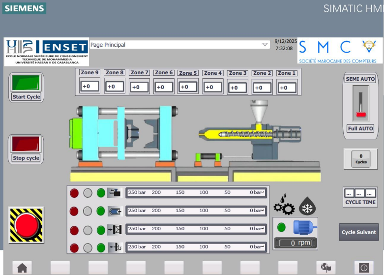
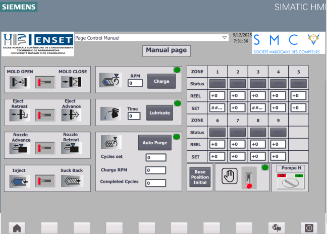
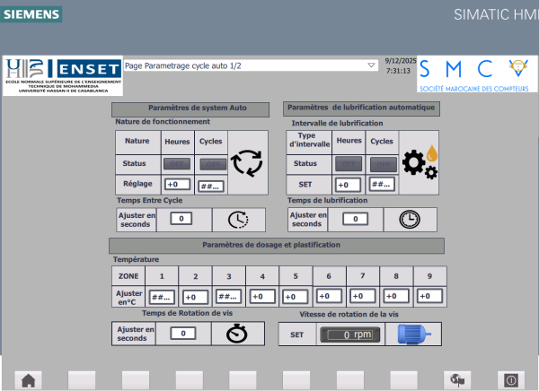
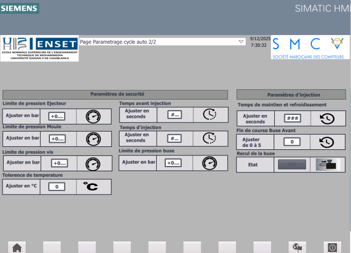
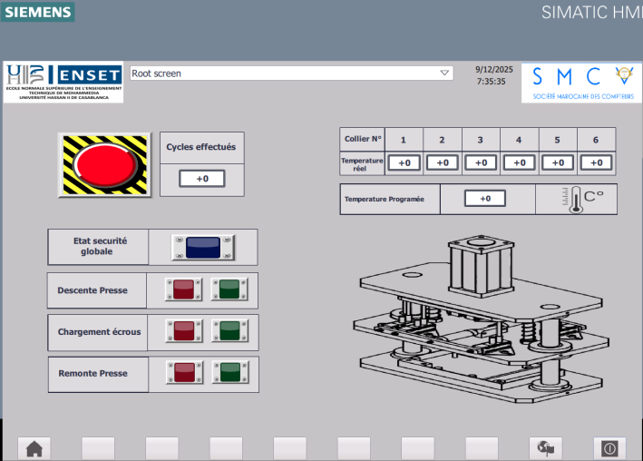
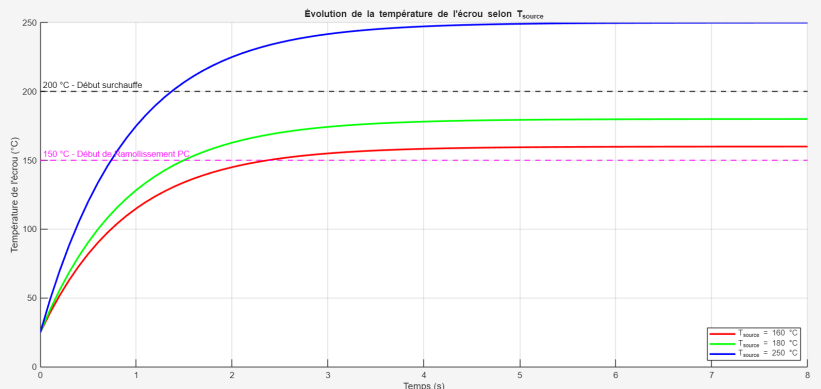
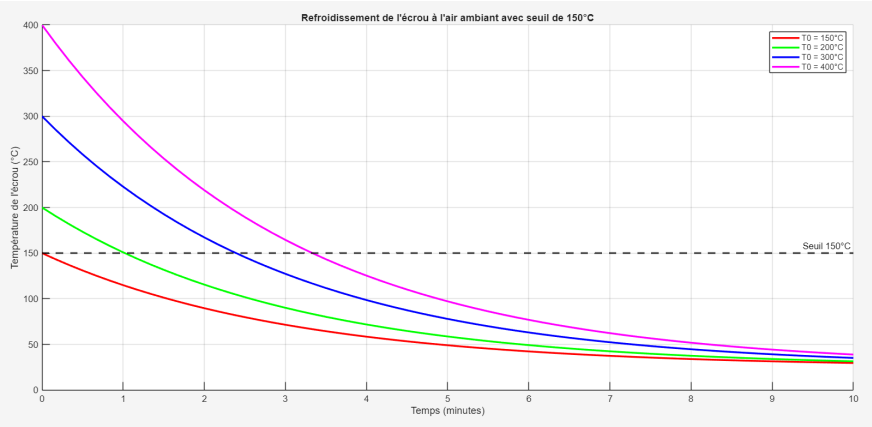

Automation (PLC/HMI), mechanical arm, pneumatic press design, and IT maintenance
SMCV internship covering Siemens S7-1200 automation, HMI supervision, mechanical design, thermal analysis, and industrial workstation recovery for electricity meter production.
Company: SMCV (Société Marocaine des Compteurs) | Duration: July 2025 - September 2025
Automation
S7-1200
TIA Portal sequence logic and HMI commands.
Design
Inventor
Mechanical arm and nut insertion press concepts.
Thermal
ANSYS
Heating and cooling behavior for insert nuts.
Evaluation
20/20
Supervisor rating for the internship work.
Mission overview
Industrial problem
The workshop needed practical improvements for nut insertion quality, operator workflow, HMI operation, and stability of meter configuration workstations.
Engineering response
The work combined TIA Portal, Siemens S7-1200 automation, HMI screen design, Autodesk Inventor concepts, ANSYS-based thermal reasoning, and industrial IT troubleshooting.
HMI screens & designs
Operator interface scope
The HMI work covered the main operation page, manual controls, and configuration screens for the injection molding machine. The objective was to make machine commands, parameter adjustment, and operator supervision clearer on the shop floor.




Engineering deliverables
Mechanical insertion arm
The first solution addressed nut perpendicularity defects and operator effort through a manual insertion arm designed in Autodesk Inventor.
- Reduced quality variability caused by poorly inserted nuts.
- Improved the operator working position and repeatability.
- Revealed the limitation of sequential nut-by-nut insertion.
Nut insertion press
The second solution moved toward simultaneous insertion through a pneumatic press concept, PLC sequence logic, HMI controls, and thermal validation.
- Mechanical design: structural and functional press concept.
- Automation: TIA Portal logic for sequence control and safety.
- Thermal analysis: heating behavior checked for safe insertion temperatures.

Press HMI and thermal evidence



Industrial IT maintenance
Context
Inhemeter workstations are used to configure, parameterize, and test electricity meters. Failures can delay production.
Intervention
The unstable Chinese-language Windows XP virtual machine was replaced with a stable English setup and compatible drivers.
Result
The configuration stations recovered stable operation, reducing crashes and improving the meter programming workflow.
Conclusion and perspectives
Internship summary
- Designed and dimensioned nut insertion tooling concepts.
- Developed PLC logic and HMI interfaces for industrial operation.
- Used thermal simulation and calculations to support insertion process decisions.
Future perspectives
- Process improvement: optimize heating and cooling cycles and evaluate active cooling.
- Skill development: deepen thermal simulation, mechanical modeling, and PLC programming practice.
Supervisor evaluation (20/20)
Overall remarks
"Serious work, punctuality, and respect for instructions are to be highlighted."
(Original: "Travail sérieux, ponctualité et respect des consignes sont à souligner")